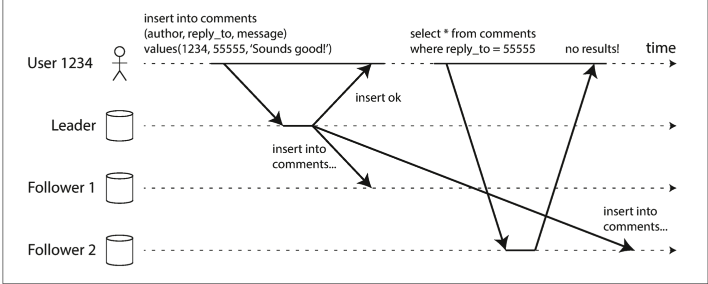

Leader and Followers
每个保存数据库的备份的节点都被称为备份节点(Replica)。如何保证不同节点的数据最终是相同的呢？
每次对数据库的写操作都要被备份节点处理，否则，备份数据库将不会保存相同的数据。最普遍的解决方法是基于leader的复制（leader-based replication，也被叫作master–slave replication）。工作流程如下：
其中的一个备份节点被选做leader（也被叫作 master 或者 primary）。客户端是有的写数据请求都要发送到leader，先把数据写到leader的本地存储。
其他的备份节点被称为followers（也被叫作read replicas, slaves, secondaries, 或者 hot standbys）。当leader把数据写在它的本地存储时，leader需要把所有的数据变化，以复制日志的形式，发送到所有的followes。每个follower接受log，然后以leader写数据相同的顺序，写入自己的本地存储。
当客户端读取数据的时候，可以从leader或者follower读取。但是写数据的请求只能被leader接受。

同步复制 vs 异步复制
数据复制的一个重要问题是，数据是同步复制，还是异步复制的。
上图中，follower 1的复制是同步的：在leader返回成功给用户之前，leader等待follower 1确认它接受到写操作。follower 2的复制是异步的，leader只是发生了消息，没有等待follower 2的回应。
同步复制的优点是follower可以拥有最新的数据备份，与leader保持一致。如果leader挂机了，数据仍然保持在follower。缺点是如果follower不返回结果给leader（follower程序崩溃，网络错误等原因），leader的写操作不能继续。leader会堵塞所有的写操作，知道follower的复制恢复正常。
实践上，基于leader复制一般都是异步的。这种情况下，如果leader节点崩溃并且无法恢复，leader节点没有同步到其他follower的写操作的数据就会丢失。这意味着，一个写操作是不能保证是持久的，就是返回了成功的结果给客户端。
建立新的Followers
有时候，出于增加备份节点的数量，或者替代失效的备份节点等原因，需要建立新的followers。这时候需要保证新的follower的数据是和leader完全一致的。流程一般如下：
- 在某个时间点，给leader的数据库获取一个快照(snapshot)，并且尽可能地不要锁住整个数据库。大部分的数据库支持这样的备份功能。MySQL也有对应的第三方工具。
- 将快照复制到新的follower节点
- follower连接上leader，并且请求snapshot之后的所有的数据变化。这要求snapshot是leader的复制日志中特定位置（position）相关的。这种特定位置有不同名字，在
PostgreSQL中叫作log sequence number, 在MySQL叫作binlog coordinates - 当follower处理了snapshot之后的数据变化的日志后，它就跟上leader的数据，可以继续处理leader发生的数据变化。
处理节点的运行中断(Outages)
系统中任何一个节点都有可能停止服务，可能由于系统错误，或者安装系统安全不停需要重启。我们的目标是，在一些节点失效的情况下，仍然保持系统运行。
Follower失效：Catch-up恢复
在follower的本地磁盘中，保存着从leader接受的数据变化的日志。如果follower崩溃重启，或者与leader的网络中断,follower可以容易地从日志中恢复：从日志中获取崩溃前的日志记录，然后根据这个记录向leader请求崩溃之后的所有数据变化。当处理完这些变化之后，follower就跟上leader了。
Leader失效：故障切换（Failover）
对于leader故障的处理比较复杂，包括：选择一个follower作为新的leader，客户端需要配置，将他们的写请求发送到新的leader，其他的follower需要将处理新leader的数据变化。
一个自动的故障替换包括：
- 确定leader节点已经失效。有很多事情能使节点失效，程序崩溃，断电，网络故障等。大多数系统使用超时(timeout)来判断节点是否失效。
- 选择新的leader。
- 重新配置使用新leader的系统。
故障切换需要处理这些问题：
- 如果使用了异步复制，在旧leader失效之前，新的leader可能没有接受全部的旧leader的写数据日志。后面如果旧的leader重新加入集群，就会发现有数据冲突。一般的做法是忽略旧leader的写操作，虽然这样丢失了数据。
- 在某些情况，两个节点都相信自己是leader节点，这种情况叫做脑裂(split brain)。这是一种危险的情况，如果2个leader都接受写请求，并且没有解决冲突，数据容易丢失或者损坏。
- 选择合适的超时时间，来觉得leader节点是否失效。过长的timeout，意味着需要过长的时间来恢复故障。如果过短，会引起不必要的故障切换。
备份日志(Replication Log)的实现
leader节点将数据变化的备份日志发送给follower，那么，怎么实现这个备份日志了？
基于语句的备份
最简单的情况是，leader节点，记录下每条写操作的语句到日志，然后吧这份日志发送给follower。对于关系型数据库(relational database)，就是将每条INSERT, UPDATE, DELETE语句发送给follower，follower解析并且执行这些语句。
这样的备份有以下的问题：
- 如果有执行语句调用了不确定的函数，例如
NOW()获取当前时间，RAND()后去一个随机数，这回导致follower的执行结果与leader不一致 - 如果使用自增的列，或者依赖于一些现有的数据库的数据(例如，
UPDATE ... WHERE <some condition>)，这要求follower执行语句的顺序必须和leader一致。当同时有多个执行的事务时，这会限制follower的备份 - 有副作用的语句（例如，触发器，存储过程，用户自定义函数等），这些会导致follower会有与leader不一样的结果
预写式（Write-ahead log，WAL）备份
这个日志是追加式的字节序列，保存着对数据库的所有写操作。可以使用这一份日志，来进行节点间数据的复制。
逻辑(基于行的)日志备份
关系型数据库的逻辑日志，是基于行粒度的，描述对数据库表格的写操作的一系列记录。MySQL的binlog使用的是这个方法。
复制延迟的问题
节点备份的目的，除了容忍节点的失效，还是为了可扩展性（处理超出单机上限的请求），减少延迟（把节点发在离用户地址位置近的地方）。
但是，从leader到follower的数据异步复制，存在复制延迟，这会导致一定时间内导致leader节点与follower节点的不一致。
读取用户的写操作
当一个用户在leader节点提交了自己的写操作，然后在follower节点读取自己的刚写入的数据时。

在这种情况下，我们需要read-after-write consistency，也被叫做read-your-writes consistency 。这保证，当用户刷新页面是，总看到自己提交的更新的数据，但是不保证其他用户也能看到。
实现的方法
- 当读取用户可能修改的东西时，从leader节点读取；否则，从follower节点读取。这要求需要知道哪些资料是用户可能修改的。
- 如果大部分的东西都可能被修改，这时可以记录数据的更新时间，比如更新一分钟之后，从follower节点读取数据。